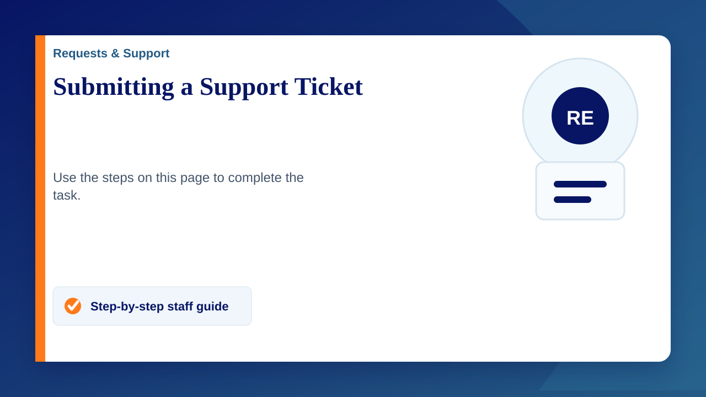

How to submit a support ticket
- Navigate to https://launchpad.classlink.com/ispschools
- Click on the Service Desk icon
- Click on Technology Service Desk
- Click on either Incident Request or Service request (whichever fits your needs best)
- Complete the details and log the issue or request.
Quick Solutions (without submitting a ticket)
Self-Help - Click on Self-Help to manually look through or search the knowledgebase for solutions.